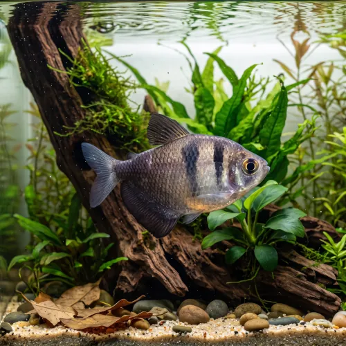

Nome popular principal
Tetra Negro
Tetra Negro, Tetra-Negro, Tetra Saia-Negra, Black Skirt Tetra, Black Widow Tetra
Ficha de peixe
Tetras e Caracídeos
Um dos peixes mais rústicos e populares do aquarismo, perfeito para iniciantes e para compor cardumes em aquários comunitários.

Nome popular principal
Tetra Negro, Tetra-Negro, Tetra Saia-Negra, Black Skirt Tetra, Black Widow Tetra
Nome científico
Nome técnico essencial para taxonomia, cruzamento de manejo e referência editorial consistente.
Dificuldade de manejo
Use este nível como referência inicial, sempre considerando volume, estabilidade e compatibilidade do aquário.
Seção 1
Seção 2
Seções 4 a 6
Tetra Negro tem hábito alimentar onívoro. Excelente. 1 a 2 vezes ao dia. Devora com entusiasmo rações em flocos e grânulos finos, apreciando bastante petiscos vivos ou congelados como dáfnias, artêmias e tubifex.
Fêmeas adultas são significativamente mais robustas e com o abdômen mais volumoso; machos têm corpo mais esguio e a nadadeira anal ligeiramente mais ampla. Tipo de reprodução: Ovíparo. Dificuldade de reprodução: Fácil. Desova de forma simples dispersando centenas de ovos entre plantas de folhas finas, devendo-se retirar os reprodutores para preservar os alevinos.
Alta. Substrato recomendado: Substrato escuro ou areia fina de rio. Necessidade de esconderijos: Média. Fica visualmente deslumbrante em aquários plantados compostos por substrato de tonalidade escura e iluminação moderada.
Seção 7
À medida que envelhece, o tom preto intenso do corpo tende a clarear suavemente para um cinza-chumbo, o que é um processo natural da espécie.
Seção 8
Sim, é uma das espécies mais rústicas e adaptáveis do aquarismo, sendo ideal para quem está montando o primeiro aquário.
Recomenda-se manter um grupo mínimo de 6 a 8 indivíduos para que vivam em cardume harmonioso e reduzam o estresse.
Não é recomendado, pois o Tetra Negro pode se sentir atraído pelas nadadeiras longas e fluídas do Betta e beliscá-las.